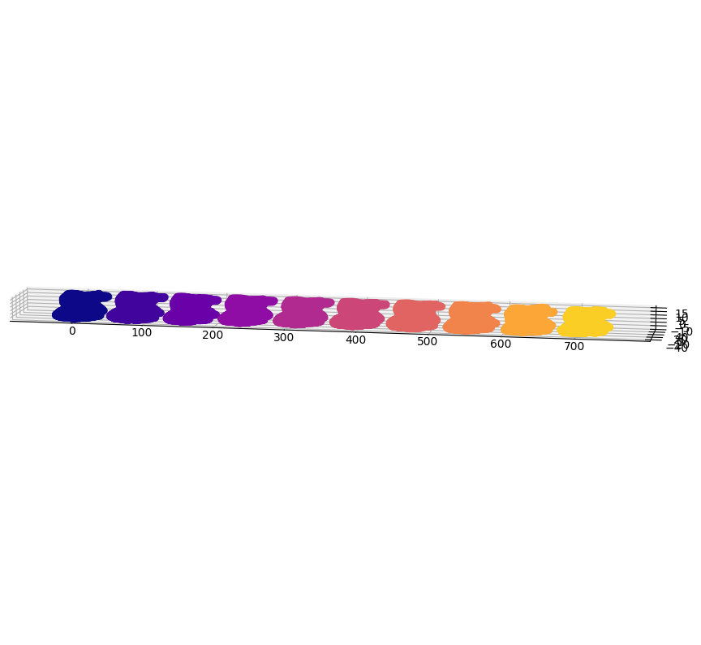
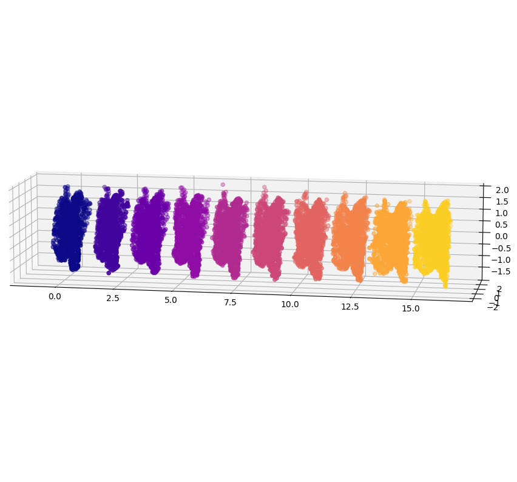

Visualize the preprocessing of real data#
[1]:
import src.setcwd
src.setcwd.main()
Working directory: /home/adele/code/my28brains/src
Directory added to path: /home/adele/code/my28brains
Directory added to path: /home/adele/code/my28brains/src
Directory added to path: /home/adele/code/my28brains/H2_SurfaceMatch
Directory added to path: /home/adele/code/my28brains/src/notebooks
Directory added to path: /home/adele/code/my28brains/src/notebooks/csv
[2]:
import os
import numpy as np
import trimesh
import project_menstrual.default_config as default_config
import src.viz as viz
preprocess_dir = default_config.preprocess_dir
preprocess_dir
INFO: Using pytorch backend
[2]:
'/home/adele/code/my28brains/project_menstrual/results/1_preprocess'
[3]:
sorted(os.listdir(preprocess_dir))
[3]:
['a_meshed',
'b_centered',
'c_nondegenerate',
'd_reparameterized',
'e_sorted',
'f_interpolated']
[4]:
mesh_dirname = "d_reparameterized"
mesh_dir = os.path.join(preprocess_dir, mesh_dirname)
filenames = sorted(os.listdir(mesh_dir))[:10]
filenames
[4]:
['left_structure_-1_day01_at_0.0.ply',
'left_structure_-1_day02_at_0.0.ply',
'left_structure_-1_day03_at_0.0.ply',
'left_structure_-1_day04_at_0.0.ply',
'left_structure_-1_day05_at_0.0.ply',
'left_structure_-1_day06_at_0.0.ply',
'left_structure_-1_day07_at_0.0.ply',
'left_structure_-1_day08_at_0.0.ply',
'left_structure_-1_day09_at_0.0.ply',
'left_structure_-1_day10_at_0.0.ply']
[5]:
def plot_from_preprocess_dir(mesh_dirname, n_X=10):
mesh_dir = os.path.join(preprocess_dir, mesh_dirname)
filenames = sorted(os.listdir(mesh_dir))[:n_X]
mesh_sequence_vertices = [
trimesh.load(os.path.join(mesh_dir, filename)).vertices
for filename in filenames
]
mesh_sequence_vertices = viz.offset_mesh_sequence(mesh_sequence_vertices)
viz.plot_mesh_sequence(mesh_sequence_vertices)
[6]:
plot_from_preprocess_dir(mesh_dirname="b_centered")

[7]:
plot_from_preprocess_dir(mesh_dirname="c_nondegenerate")
[8]:
plot_from_preprocess_dir(mesh_dirname="d_reparameterized")

[7]:
filenames
[7]:
['left_structure_-1_day04_at_0.0.ply',
'left_structure_-1_day05_at_0.0.ply',
'left_structure_-1_day06_at_0.0.ply',
'left_structure_-1_day07_at_0.0.ply',
'left_structure_-1_day08_at_0.0.ply',
'left_structure_-1_day09_at_0.0.ply',
'left_structure_-1_day10_at_0.0.ply',
'left_structure_-1_day11_at_0.0.ply',
'left_structure_-1_day12_at_0.0.ply']